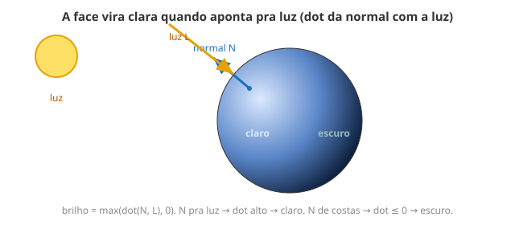

← Mapa do curso · Marco 2 · Módulo 10 de 11
Seu objeto já tem forma (M7) e pele (M9). Falta o que dá volume de verdade:
a luz. Faces viradas pro sol ficam claras; viradas pro outro lado, escuras. E o
jeito de calcular isso é o reencontro com um velho conhecido do M8: o dot.
dot (entre a direção dela e
a luz) é alto ou baixo? Hora de cobrar a aposta. Antes de rolar a página:
qual era sua resposta? Segura ela.
Cada pedacinho de uma superfície "olha" pra alguma direção. Essa seta perpendicular à superfície
é a normal (no shader: v_normal, que o motor já te entrega). No topo de
uma esfera, a normal aponta pra cima; na lateral, pro lado. É a normal que diz se aquele ponto está
"de cara" pra luz.

max(dot(N, L), 0.0). Normal pra luz → dot alto → claro. De costas → escuro."Difusa" é a luz que espalha igual por todo lado (o oposto de um brilho espelhado — isso fica pro Marco 3). A receita é uma linha:
N (pra onde a face aponta) e a
direção da luz L.dot(N, L): alto quando a face encara a luz, baixo/negativo quando dá as
costas.max(dot(N, L), 0.0) — luz não pode ser "menos que zero".Esse número (0 a 1) multiplica a cor: 1 = pleno sol, 0 = sombra. Resposta da aposta do
M8: clara quando o dot é ALTO. Acertou?
Uma esfera de verdade, iluminada. Gire o slider direção da luz e veja a parte clara passear pela superfície. Onde a normal encara a luz, fica claro; do outro lado, escuro.
Sem mexer — preveja: quando a luz aponta lá da direita, qual lado da esfera fica claro? E o que acontece no ponto exato onde a normal aponta direto pra luz?
Resposta: ____________________
Agora gire o slider e confira.
v_normal? Não calculei.v_uv). Você só usa.dot?dot vira puro "alinhamento" (0 a 1), sem o
tamanho das setas atrapalhar o brilho.max(..., 0.0), as faces de costas ganhariam brilho negativo e
a conta estoura/escurece errado. Luz difusa sempre corta o negativo.
v_normal, pronto no motor).max(dot(N, L), 0.0): claro quando a face encara a luz.dot do M8 — agora virou iluminação.Hora de juntar o Marco 2 inteiro: forma (M7) + vetores/dot (M8) + textura (M9) + luz (M10). O cubo abaixo já vem texturizado e iluminado. Ele é seu: mexa na mistura de cor, na força da luz, troque a forma na sua cabeça. Quando gostar, clique 📷 Baixar imagem e 📋 Copiar shader pra compartilhar.
Ideias pra experimentar dentro do bloco editável:
0.25): com 0.0, a sombra fica preta total.vec3 cor = texture2D(u_tex, v_uv).rgb * vec3(1.0, 0.6, 0.6);texture2D(u_tex, fract(v_uv * 2.0)).Meta: usar pelo menos 2 dos 3 ingredientes do marco (forma já vem de graça): textura, luz, e cor autoral.
Ligue cada termo ao seu significado (escreva a letra):
dot(N,L) B. direção pra onde a superfície apontamax(...,0) C. cor que espalha igual, sem ponto brilhante← Anterior: Texturas & UV · Próximo: Por Baixo do Capô II — Hardware Fixo →